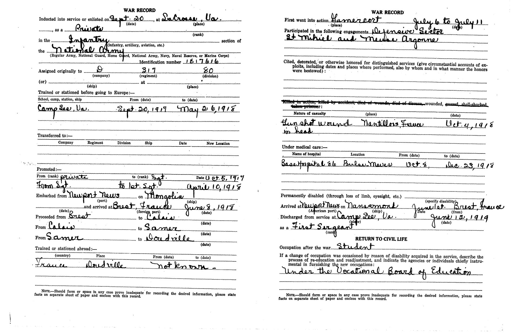
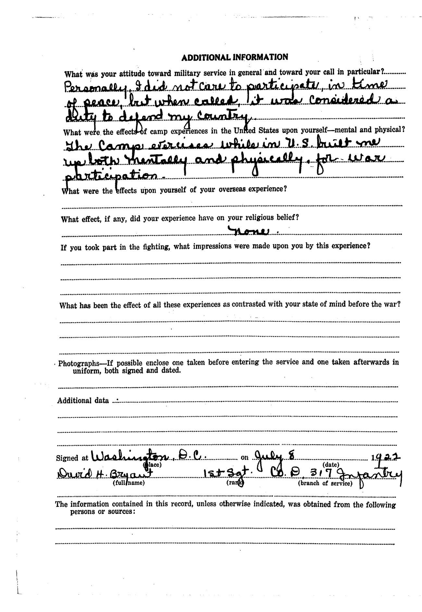
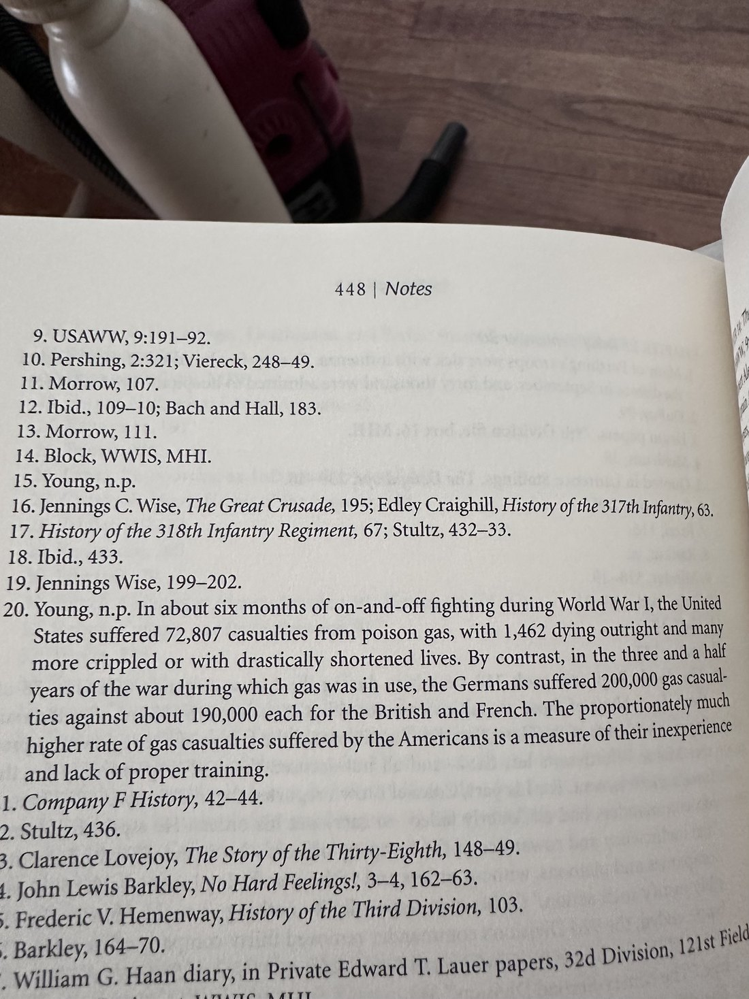
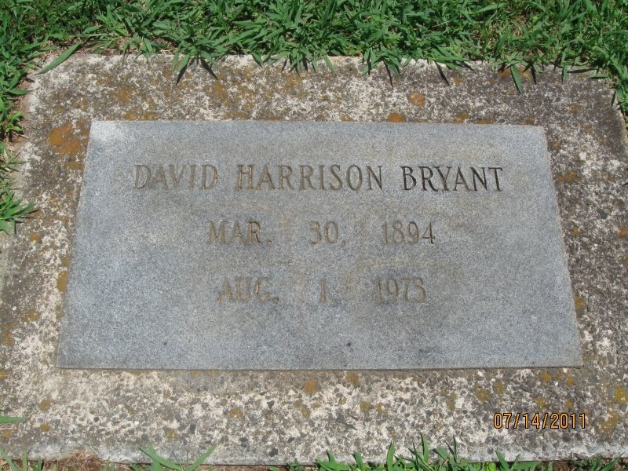

Three men came out of it, in different conditions. One of them lived long enough to meet two children at a fireplace.
Base Hospital 86 stood at the hospital centre at Mesves, in the Département de la Nièvre, and had opened to patients only eleven days before he arrived. It was built for a thousand beds. On 15 November 1918, while he was in it, it held 2,340 patients — the overflow under marquee tents.
He came out of Base Hospital 86 on 23 December 1918, returned to duty, sailed from Brest on the USS Nansemond on 20 May 1919 and reached the United States on 1 June. He was discharged at Camp Lee on 13 June 1919. The final pay roll of Company D carries his signature: $140.20, and $4.40 travel pay to get home.
He gave his post-war occupation as Student, retrained under the Vocational Board of Education, and never went back to farming. In 1921 he married Thelma L. Stack of Beloit, Kansas, at Washington, D.C.

In 1922 the Virginia War History Commission sent him a four-page questionnaire. He filled it in at Washington on 8 July and signed it. He answered the question about what the training camps had done for him — “built me up both mentally and physically.” He answered the one about his religious belief: the war had had none — that is, no effect on it. He was a Baptist and remained one.
Then came three questions.
What were the effects upon yourself of your overseas experience?
If you took part in the fighting, what impressions were made upon you by this experience?
What has been the effect of all these experiences as contrasted with your state of mind before the war?
All three are blank.

There is a temptation to make those blanks say something. They are the most eloquent thing in the file and they are also, strictly, nothing at all: a man who had taken a gunshot wound in the head declining to fill in three lines on a form, four years later, in an office in Washington. He did not write it down, and it is not the business of this account to write it for him.
He told me he had been gassed. I was twelve, and I asked, and that is what he said.
His own 1922 form does not record it. Where the printed casualty options list wounded, gassed, shell-shocked, everything but wounded is struck through, and the nature-of-casualty line gives the gunshot alone. But his regiment’s history records that on 4 October the enemy threw “a great many gas shells in the vicinity of Nantillois and the ravines around the town” — the exact place his casualty record names, on the exact day. And across about six months of fighting the United States took 72,807 gas casualties, of whom 1,462 died outright — a proportionately higher rate than any other army, for the plainest of reasons: the Americans were new at it.

On 12 July 1973 a fire at the National Personnel Records Center in St. Louis destroyed the great majority of United States Army personnel files for 1912 to 1959. His was in the worst-damaged area. When I asked for it in 2026 the answer was that the record needed to answer the inquiry is not in our files.
David Harrison Bryant died on 1 August 1973, aged seventy-nine — twenty days after the fire. There is no suggestion he knew, and no reason he would have. It is recorded here because it is true and verifiable and explains nothing at all.

Walter Newton Bryant died on 22 September 1945 at Brookneal, Virginia, aged fifty-seven.
He was the second of the three brothers to die — twenty-seven years after Alexander was killed in France, twenty-eight years before David died at home.
And of the three men in this account who came through the war alive — Walter, William Kokos and David — Walter died youngest. He was fifty-seven. Kokos was sixty-five. David, who was shot in the head at Nantillois, lived to seventy-nine.
His daughter Virginia Mae, whom this family called Ma Mae, was my grandmother.
It is tempting to say the family survived because he stayed, but that is not what the record supports. He already had a wife and two children in June 1917; they existed whatever happened next. What cannot be known is what a third Bryant in France would have meant — to him, to the two who went, or to anybody who came after. Two of the three came back from that war. There is no arithmetic that turns that into a certainty about the third.